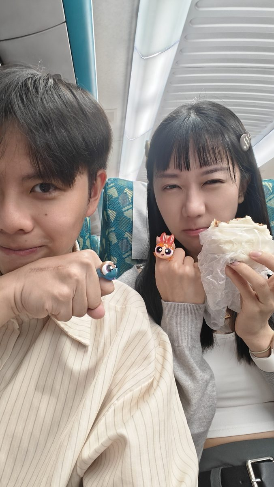
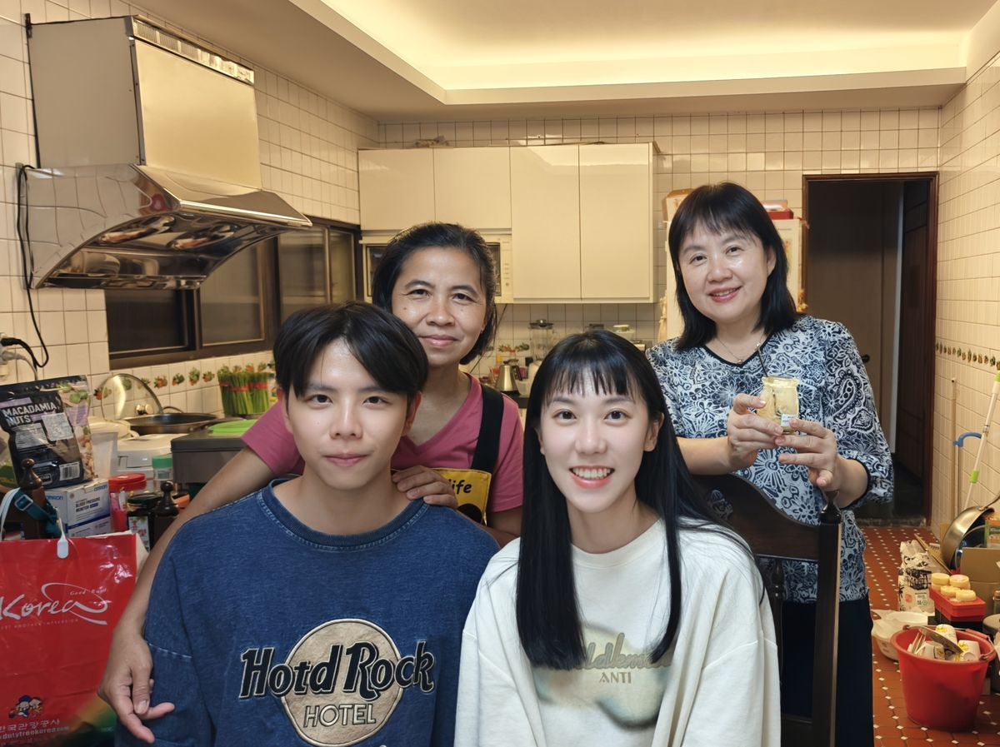

南投仁愛秘境
深山・部落・溫泉・星空
2026年5月22日（五）— 5月25日（一）・2人同遊
⚠️ 出發前必讀
注意事項
- 入山證務必出發前一週上警政署網站申辦（甲種・免費）
- 力行產業道路路況惡劣，建議白天通行、雨天易坍方
- 霧社後再無加油站，務必加滿油
- 訊號斷續，下載離線地圖、把住宿電話抄在紙上
- 紅香部落屬山地管制區，建議晚上6點前抵達住宿
💰 預算概覽
NT$ 5,250
每人費用小計
埔里故事館・D1住宿
$2,200 / 2人
馬累了吧・D2住宿
$2,200 / 2人
家裡樂達麗山莊・D3
自家
高鐵來回（南港↔台中）
$1,500 / 人
伙食 + 零食
$1,200 / 人
Cona's 巧克力城堡
$210 / 人
日月潭遊湖船票
$140 / 人
🚄 高鐵
台北 → 台中（去程）
5/22・07:40 出發・08:38 抵台中
台中 → 南港（返程）
5/25・08:08 出發・09:05 抵南港
🚗 自駕路線
台中高鐵站取自備車
不租車，直接開自己的車上山
主要路線
台中高鐵 → 國道6 → 埔里 → 台14 → 霧社 → 投89力行產業道路
重要：霧社加滿油
霧社加油站是進山前最後一站・切勿省略
提前下載離線地圖
投89路段幾乎無訊號・Google Maps 預先下載南投區域
07:40
08:38
10:00
12:00
14:30
16:15
17:00
18:30
08:00
09:15
11:00
12:30
13:30
16:00
16:30
17:30
19:00
08:08
📍 所有景點
🏰
Cona's 尼那巧克力夢想城堡
歐風莊園・手工巧克力體驗
⛵
日月潭遊湖
早晨薄霧・環湖遊艇
☕
鹿篙咖啡莊園
魚池茶區・得獎紅茶
⛪
紙教堂 Paper Dome
桃米生態村・日本移建
🍫
18度C 巧克力工坊
埔里・生吐司冰淇淋
🐹
享日咖啡
桃米・水豚咖啡廳
🍱
塔洛灣景觀餐廳
碧湖view・原民料理
🏫
發祥國小
部落小學・操場view
♨️
紅香溫泉
免費野溪溫泉
⛺
馬累了吧
D2住宿・無光害觀星
🥾
帖比倫步道
拉繩陡坡・來回30分鐘
🌊
帖比倫峽谷瀑布
五彩岩壁・深潭秘境
🍜
娜娜泰式料理
埔里・道地泰式
📷 旅途回憶

